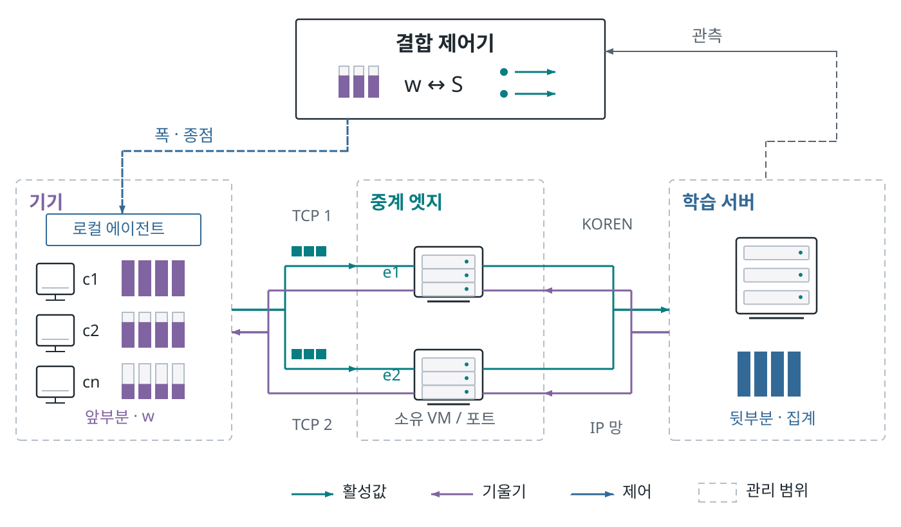
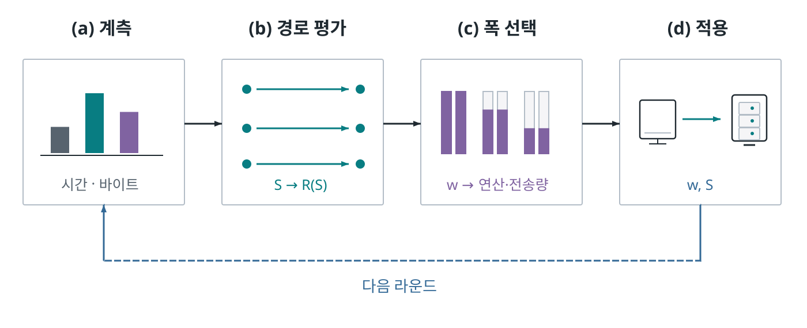
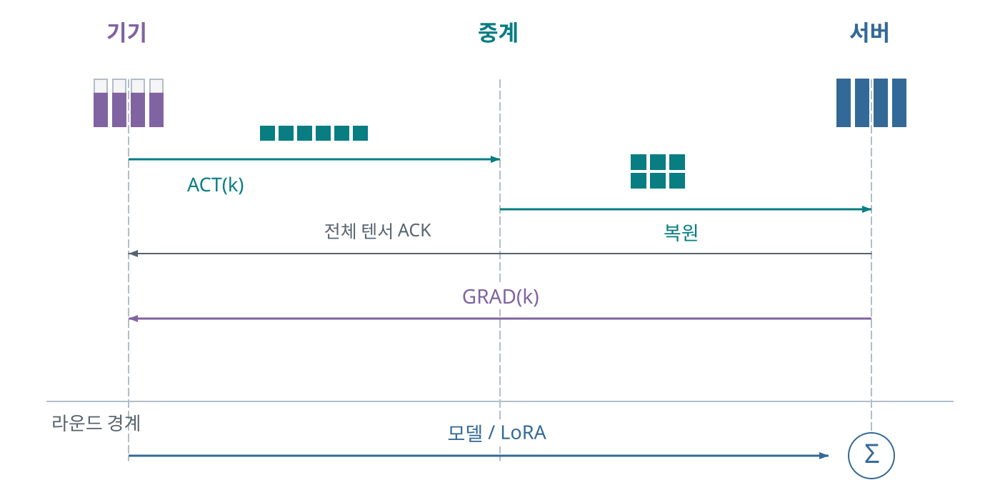
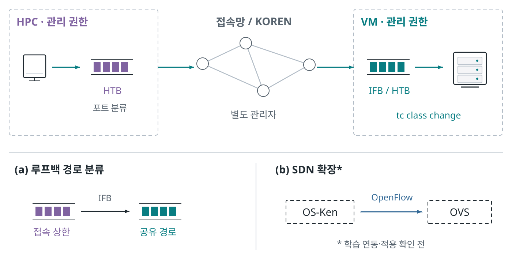
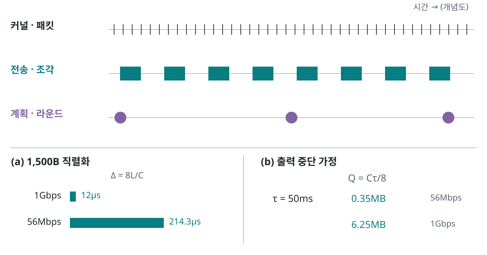
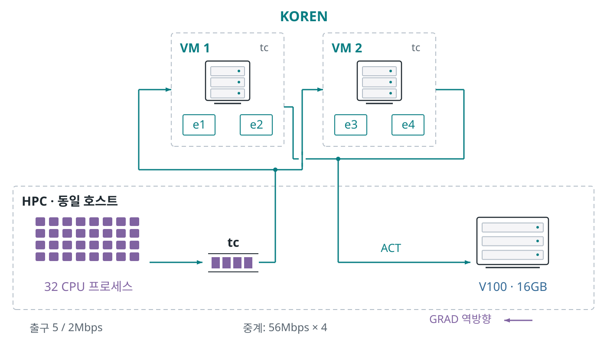
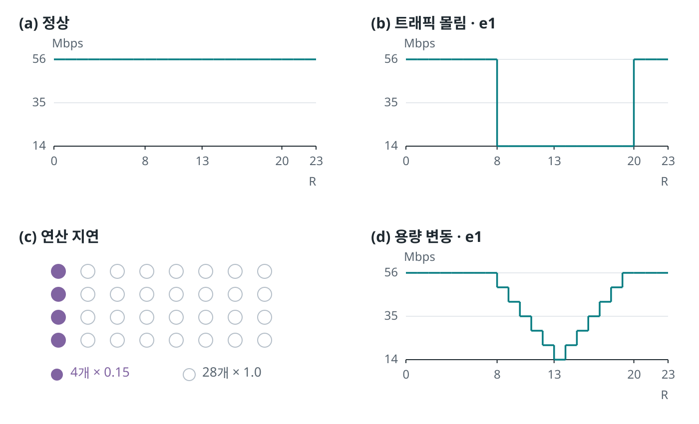
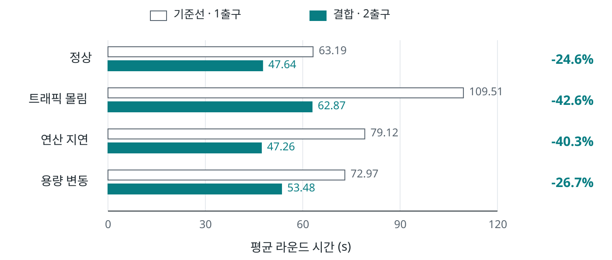
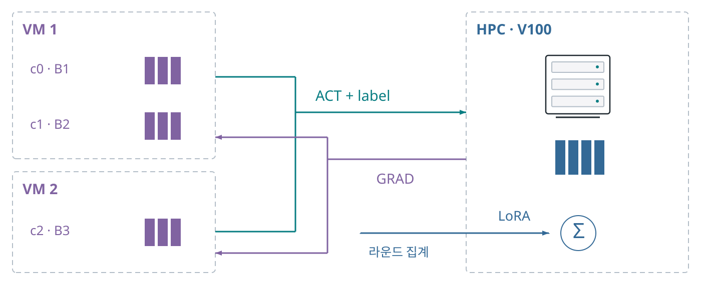

전체 아키텍처

기기에서 모델 앞부분을 실행하고, 허용 중계 접속점을 통해 서버와 활성값·기울기를 교환한다. 결합 제어기는 폭 w와 종점 배정 S를 함께 계획한다.
점선 경계는 관리·위임 범위가 필요한 자원이다. 각 선은 논리 TCP 연결이며 물리 경로의 독립성을 뜻하지 않는다. OS-Ken/OVS는 별도 확장으로 학습 연동과 실제 적용 확인 전이다.
논문용 벡터 도식 9종. 그림에는 짧은 표기만 두고 조건과 적용 범위는 캡션으로 옮겼습니다. 실측값과 해석 범위는 기존 보고서를 따릅니다.

기기에서 모델 앞부분을 실행하고, 허용 중계 접속점을 통해 서버와 활성값·기울기를 교환한다. 결합 제어기는 폭 w와 종점 배정 S를 함께 계획한다.
점선 경계는 관리·위임 범위가 필요한 자원이다. 각 선은 논리 TCP 연결이며 물리 경로의 독립성을 뜻하지 않는다. OS-Ken/OVS는 별도 확장으로 학습 연동과 실제 적용 확인 전이다.

계측, 공유 자원을 반영한 경로 평가, 폭 선택, 실행과 관측의 순서. 경로가 전송률을 바꾸고 모델 폭이 연산량과 전송 수요를 바꾼다.
비용 모형에 기초한 단계적 휴리스틱이며 전역 최적해 보장은 없다.

같은 배치 k의 활성값을 여러 TCP 연결에 나누어 전송하고, 전체 구간의 수신 후 복원한다. 반환 기울기는 배치에 대응시키며, 연합 집계는 라운드 경계에서 별도로 수행한다.
개념 순서도이며 세로 길이는 측정 시간이 아니다. 전체 텐서 ACK를 사용하며 조각별 수신 ACK는 구현되지 않았다.

현재 실험은 팀이 관리하는 HPC와 VM의 Linux tc를 설정한다. 접속망과 KOREN 코어의 관리자 권한은 별개다. 아래의 루프백 경로 분류와 SDN 확장은 별도 구성이다.
OVSDB 큐 설정과 OpenFlow 전달 규칙은 서로 다른 집행 단위다. OS-Ken 학습 연동과 실제 OVS 적용 확인, 기관 간 위임은 검증 전이다.

패킷은 커널의 설치된 규칙으로 계속 처리하고, 전송 에이전트는 조각을, 계획 에이전트는 라운드 계획을 다룬다. 위 시간선의 간격은 개념 표현이며 실측 주기가 아니다.
아래의 1,500바이트 직렬화 시간과 출력 중단 시 유입량은 식으로 계산한 값이다. AI 추론 시간이나 실제 큐 증가량을 측정한 결과가 아니다.

클라이언트 32개 CPU 프로세스와 V100 서버는 같은 HPC 호스트에서 실행했다. KOREN VM 2대에 각각 두 중계 포트를 두어 4개 논리 엣지를 구성했다.
32는 독립 물리 기기의 수가 아니다. 선은 논리 연결을 뜻한다. CIFAR-10, cut=2, batch 32×4, 24라운드×3시드; 출구 5/2Mbps, 엣지 56Mbps×4.

선 그래프는 tc에 지정한 교란 조건이며 관측 처리량이 아니다. 정상, 트래픽 몰림, 선택적 연산 지연, 용량 변동을 비교했다.
R은 완료 로그 개수에 따른 교란 트리거로 실제 반영에 지연이 있을 수 있다. 모델·분할점·배치·데이터 분할·반복 수를 고정했다.

기존 scen32 기록의 3시드 평균 라운드 시간. 초기 4라운드를 제외했다. 기준선은 전폭·고정 배정·출구 1개, 결합은 폭·배정 변경·출구 2개 허용이다.
동일 정확도 도달 시간 비교가 아니며, 출구 수 차이도 감소율에 포함된다.

KOREN VM 2대의 3개 논리 클라이언트와 HPC V100 서버. 활성값과 정답 토큰을 보내고 기울기를 반환받으며 라운드 끝에 LoRA 어댑터를 집계했다.
Qwen2.5-0.5B, cut 2, rank 16, 16라운드×30스텝. CNN 폭·경로 제어와 통합한 실험이 아니며, 서버는 기기별 순차 처리한다.